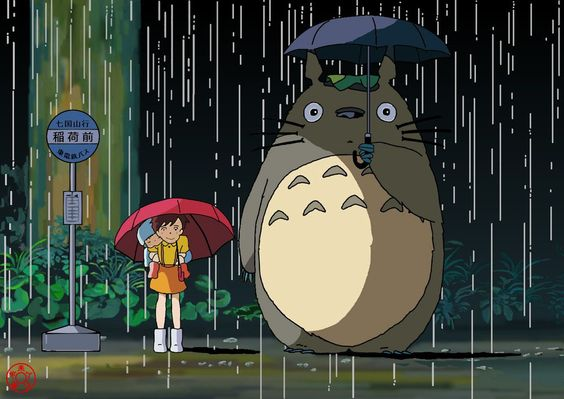

Juan Pablo Galván Varela.
3 de Abril de 2005.
18 años.
Videojuegos, animales, animes, arte y comida.
Jugar videojuegos, ver anime y leer mangas.
Spaghetti a la bolognesa.
Los colores pastel.
1. De pequeño era alérgico a los animales pero el deseo de tener un gato me quitó la alergia.
2. El día antes que naciera murió Juan Pablo II.
3. Tengo tres perros y dos gatos.
4. He visto 450 animes y leído 20 mangas.
5. Me encantan los juegos de modo historia.
6. Mis superheroes favoritos son Iron Man, Batman y Spiderman.
7. Me encantan muchos géneros musicales por lo cual no tengo artista o canción favorita.
"No son las habilidades lo que demuestra lo que somos, son nuestras decisiones" - Harry Potter
"Vive cada día como si fuera el último, porque un día de estos lo será" - Spiderman
"Mi padre lloró el día en que nací porque sabía que nunca iba a ser mejor que yo" - Iron Man
"¿Por qué nos caemos? Para que podamos aprender a recuperarnos" - Batman
"Levántate y camina hacia adelante, tienes las piernas para hacerlo" - Edwar Elric (FullMetal Alchemist)
"¡Un héroe es alguien que supera cada obstáculo que la vida pone en su camino!" - All Might (My Hero Academia)
|  |
Selecciona una opción:
¡Me gustó la página!
0
{kind=link}